A Volatility Layer Improved Every Rule I Put It On. On Shuffled Dates It Was Worse Than Nothing.
Scaling a position by target volatility over recent volatility cut the worst drawdown of buy & hold from 55% to 29%. Two controls show the whole of the gain is timing, and none of it is holding less.
Every article in this series so far has asked the same question in a different way: what should I own? Dual momentum ranks assets against each other. The 10-month moving average and the Donchian breakout decide whether to own the index at all. RSI(2) buys it for a few days at a time. Pairs trading owns one thing and shorts another.
This one asks a different question, and asks it of all of them at once: how much?
The rule is one line. Measure how volatile your own returns have been lately. If that is above the volatility you wanted, hold less; if it is below, hold more. Nothing about the market's direction enters into it. You are not forecasting returns — you are forecasting risk, and then sizing to it.
On S&P 500 buy & hold over 45 years it cut the worst drawdown from −55.2% to −29.3% and raised the Sharpe ratio from 0.69 to 0.74. Buy and hold returned 11.25% a year over the same window; with the layer that falls to 7.82%.
It improved every rule I put it on — buy & hold and four of the five strategies in this series — and none of them by much. The Sharpe gains run from 0.018 to 0.052.
And when I kept the same position sizes but applied them on shuffled dates, the result was worse than never adjusting at all — a Sharpe of 0.60 against 0.69 for doing nothing. That is the finding worth the article. The sizes are not what matters. The days they land on are.
New to systematic trading? Terms like CAGR, Sharpe ratio, volatility, drawdown and turnover are explained in plain language in the glossary — no prior knowledge assumed. Dotted underlines link straight to the relevant entry.
The rule, exactly as backtested
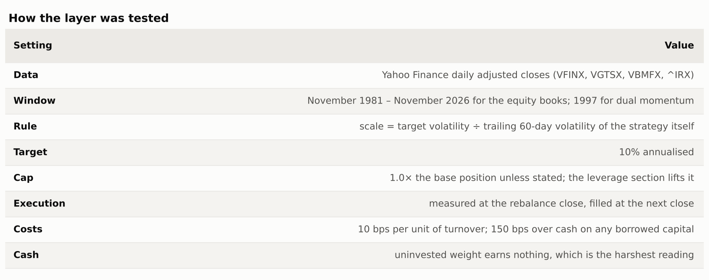
At each rebalance, using only closing prices up to that day:
• Take the strategy's own daily returns over the last 60 trading days — the weights it actually held, times what those holdings did. Not the market's returns.
• Annualise their standard deviation. That is the realised volatility.
• The scale is target volatility divided by realised volatility, so a strategy running at 20% when you asked for 10% holds half as much.
• Multiply every weight by that scale. Whatever is not held sits in cash earning nothing.
• The scale is capped at 1.0 for most of this article. The section on leverage lifts the cap and charges for it.
Two details decide whether this is an honest test.
The volatility measured is the strategy's, not the market's. This sounds like a technicality and is not. A trend filter that has already moved to bonds has almost no volatility left to damp; scaling it by the market's turbulence would shrink a position that is already safe, or — worse, once leverage is allowed — lever one. Measuring the strategy's own risk is the only version of the rule that composes with a rule that already manages risk.
The scale uses no information from the day it is applied. The base weights are known the evening before the fill, so the return series the volatility is computed from is one an investor could have measured on the morning they traded. The same one-day lag the rest of this series uses applies here too.
What it does to buy & hold
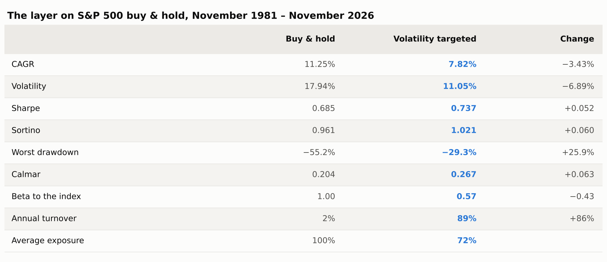
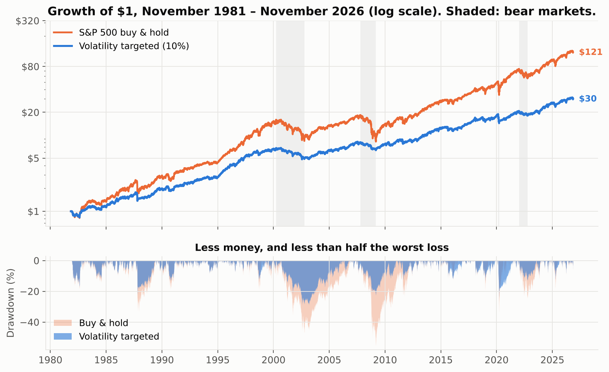
A third less return, a third less volatility, and a little over half the worst loss. A dollar in November 1981 became $29.64 with the layer, against $121.49 left alone — the cost of forty-five years of holding about three-quarters of the market. Sharpe improved by 0.052, Sortino by a similar margin, and Calmar — return over worst drawdown — went from 0.20 to 0.27, which is the largest proportional improvement in the table and the one that matches what the rule is for.
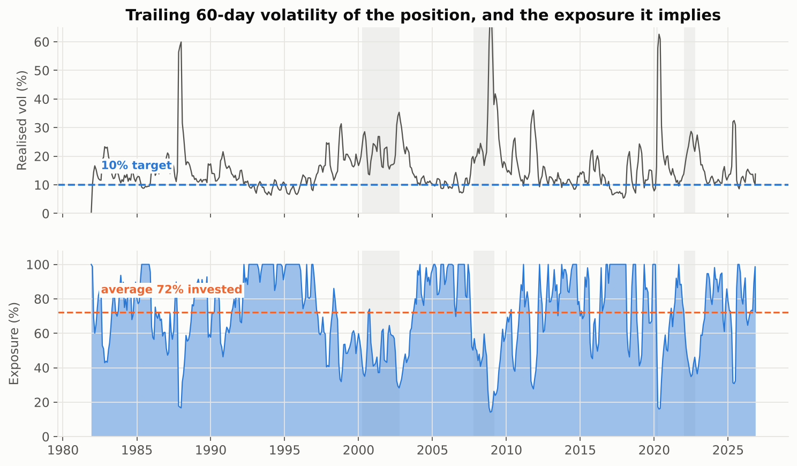
The dial spends most of its time somewhere in the middle. Average exposure was 72%, the median 74%. It sat at the cap — fully invested — on 18% of rebalance dates, and below half on 19%. The lowest it ever went was 14%, in the weeks after October 1987.
This is the first thing to notice about volatility targeting: it is not a crash filter. It does not go to cash. It is permanently, mildly de-risked, with occasional deep cuts.
The two controls
The headline number is a Sharpe improvement of 0.052 on a rule that reduces average exposure to 72%. Before believing it, there are two cheaper explanations to eliminate.
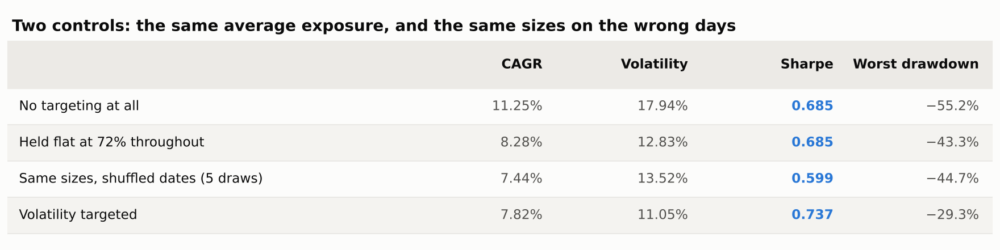
First: is it just holding less? Hold 72% of the index all the time, never adjusting. That returns 8.28% at a Sharpe of 0.69 — identical to buy and hold to three decimal places, which is exactly what theory says should happen. Mixing a portfolio with cash moves you along a straight line through the origin, and the slope of that line is the Sharpe ratio. Scaling by a constant cannot change it. So none of the improvement comes from holding less on average. All of it has to come from holding less at particular times.
Second: is any varying position size as good? Take the exact multiset of scales the rule produced over 45 years — the same 19% below half, the same 72% average — shuffle them, and apply them on the wrong dates. Five independent draws.
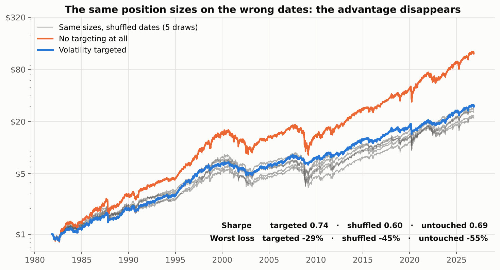
The shuffled version returns 7.44% at a Sharpe of 0.60, with a worst drawdown of −44.7%. That is worse than the targeted version on every measure, and worse than doing nothing at all on Sharpe. Moving your position size around for no reason is not neutral — it costs you, because the size changes add variance without buying anything.
So the two controls bracket the result from both sides. Holding less by itself is worth exactly zero. Moving the size around by itself is worth less than zero. The entire improvement, and then some, is in the correspondence between the sizes and the days.
Why the days are knowable
That correspondence only exists if volatility is forecastable. It is, and the margin is not subtle.
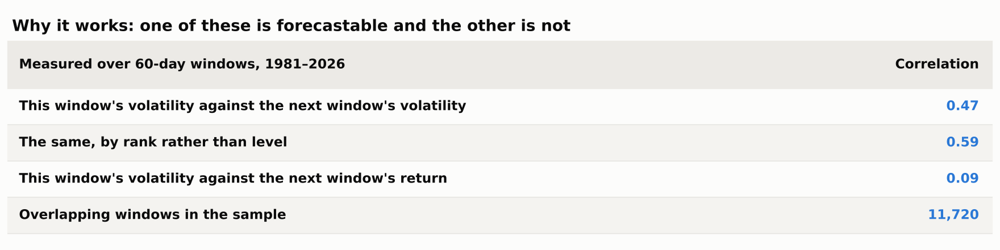
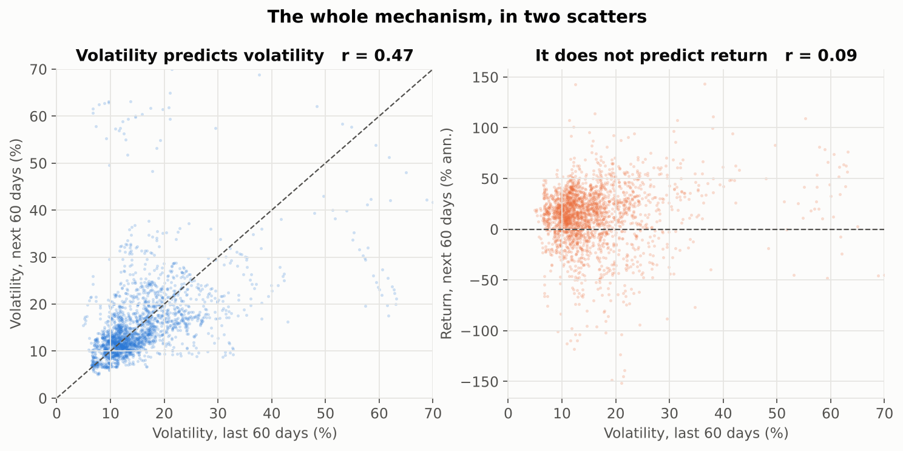
The correlation between this 60-day window's volatility and the next one's is 0.47, and 0.59 by rank. The correlation between this window's volatility and the next window's return is 0.09 — close enough to nothing that no return forecast is available here.
That asymmetry is the whole machine. Volatility clusters: calm follows calm and turbulence follows turbulence, reliably enough to act on two months ahead. Returns do not. A strategy that tries to use the first fact without pretending to know the second is doing the only thing the data supports, and the size of the prize — a few hundredths of a Sharpe point — is about right for a signal that predicts the denominator and not the numerator.
It works on everything, and barely
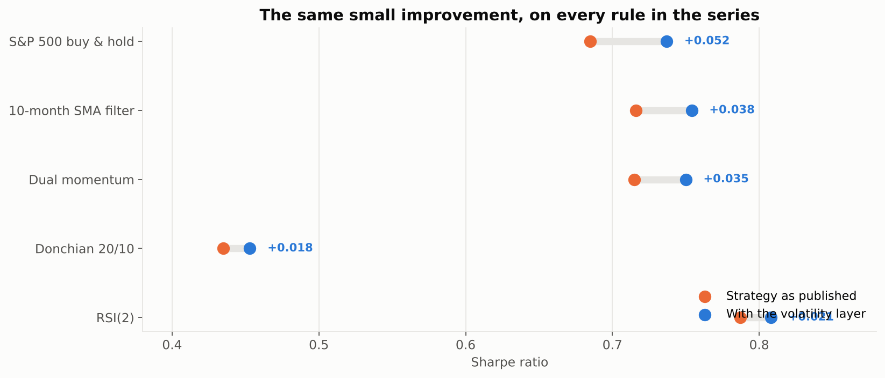
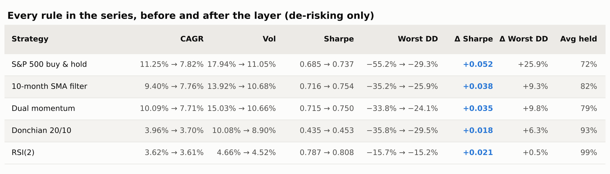
Five books, five improvements, all small. Buy & hold gains the most, at 0.052. Donchian gains the least, at 0.018. The pattern behind the ordering is simple: the more a strategy already manages its own risk, the less this layer has left to do.
Buy and hold manages nothing, so its average scale is 72% and the layer has plenty of work. The moving-average filter already moves to bonds in bad markets, so its own volatility is lower, its scale averages 82%, and the gain is smaller. RSI(2) is in the market about 6% of the time, has a realised volatility of 2.8%, and sits at the cap on 98% of days — the layer is almost never doing anything, and the gain is 0.021.
The drawdown improvements follow the same ordering and are larger in absolute terms: 25.9% for buy and hold against 0.5% for RSI(2).
Pairs trading from last week's article is absent from this table for a reason that is worth a sentence. Its returns are market-neutral and almost exactly zero. Scaling zero by anything is zero, and a Sharpe ratio near zero is not improved by dividing its numerator and denominator by the same number. The layer has nothing to act on, which is consistent with everything else here: it is a risk tool, and it does nothing for a strategy whose problem is the absence of return.
Leverage is where it goes wrong
Everything above caps the position at 1.0, so the rule can only de-risk. The original research does not cap it: when volatility is low you are supposed to hold more than 100%, financed on margin. That is where the published Sharpe gains mostly come from, and where a retail implementation runs into the real world.
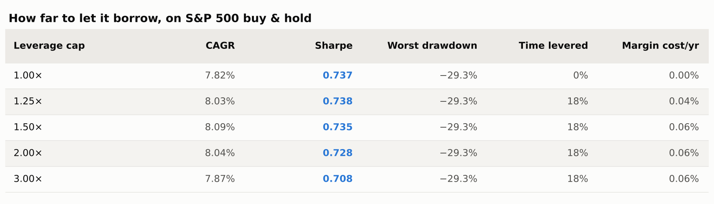
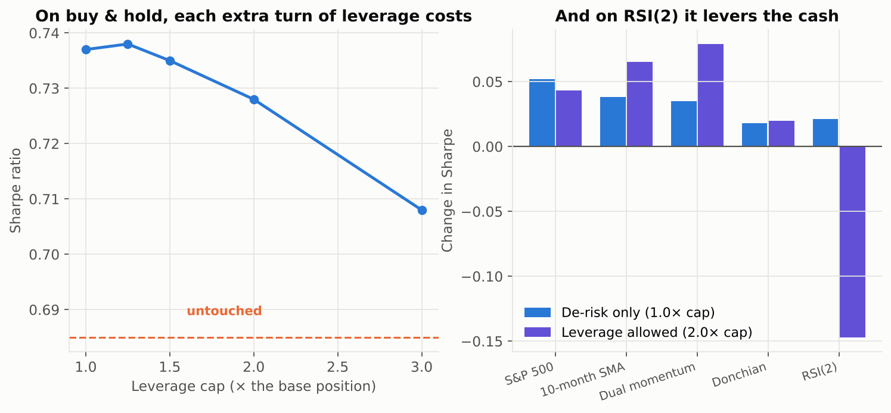
On buy and hold, raising the cap does almost nothing good. Sharpe goes from 0.737 at no leverage to 0.738 at 1.25×, then declines: 0.728 at 2× and 0.708 at 3×. The worst drawdown does not move at all, because leverage is only ever applied in calm markets and calm markets are not where drawdowns come from. You add return, you add the same amount of volatility, you pay margin for the privilege, and you end up where you started.
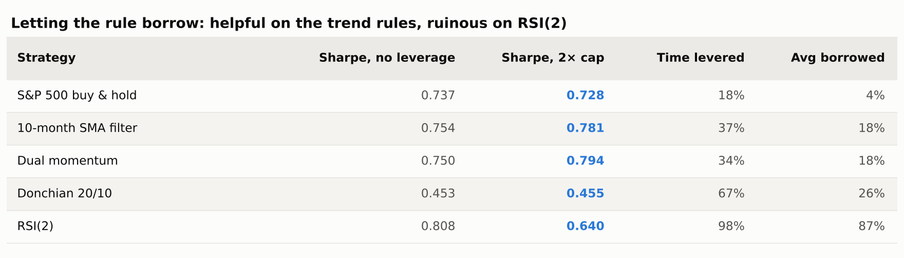
On the trend rules it is a little better — dual momentum gains 0.079 with a 2× cap against 0.035 without — because those strategies spend time in bonds, bonds are quiet, and levering a quiet thing is the trade that worked for forty years of falling rates. Whether you believe that repeats is a view about rates, not about volatility targeting.
And on RSI(2) it is a disaster. Sharpe falls from 0.81 to 0.64 — worse than the unmanaged strategy. The reason is mechanical and worth understanding, because it is the failure mode of this entire family of rules: RSI(2) is in cash or bonds 94% of the time, so its realised volatility is 2.8%, so a 10% target tells it to hold 98% of the time at the cap. It borrows 87% of the account on average, and what it buys with the borrowed money is the bond position it was sitting in. It pays margin to lever cash.
Nothing in the formula prevents this. A rule that divides by a small number produces a large number, and a strategy whose defining feature is being out of the market has a very small denominator. If you put a volatility target on top of something defensive, cap it at 1.0 or check what it is actually buying.
What it costs to run
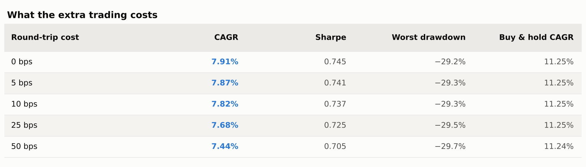
Turnover on buy and hold goes from 2% a year to 89% — you are now trading a position that used to need no trading at all. Frictionless the targeted version returns 7.91%; at 10 bps it returns 7.82%, so the layer's trading costs about nine basis points a year. At 50 bps the CAGR falls to 7.44% and the Sharpe to 0.70.
This is a much gentler cost profile than pairs trading, where the entire edge disappeared between 5 and 10 basis points. Volatility targeting trades about 89% a year against that strategy's 604%, and the improvement survives costs that would destroy a higher-frequency rule. It is one of the few things in this series that still works at 50 bps.
Margin is similarly minor at the scale a 2× cap implies: at 150 bps over cash the drag is 0.06% a year, because the borrowing is shallow and intermittent.
The parameters barely matter, which is the point
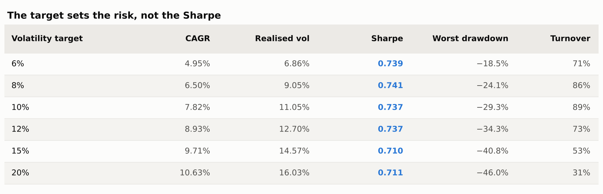
The volatility target is not a performance knob. Across 6% to 20% the Sharpe stays between 0.710 and 0.741 while realised volatility tracks the target almost exactly — ask for 6% and get 6.86%, ask for 15% and get 14.57%. The target chooses where on the risk line you sit. It does not choose how good the line is. That is unusual and genuinely useful: it means the parameter you most want to set for personal reasons is the one that does not need optimising.
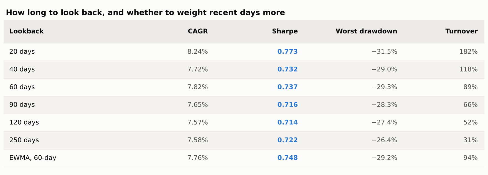
The lookback matters a little more and in a direction worth noting. A 20-day window gives the best Sharpe in the grid at 0.773, but at 182% turnover — double the 60-day version — and a worse drawdown, because a short window reacts to noise as readily as to regime. A 250-day window trades a third as much and scores 0.722 against the 60-day window's 0.737. An EWMA with the same effective memory does marginally better than the plain average, at 0.748, which is what you would expect from an estimator that stops treating a three-month-old crash as current news.
Nothing here is a cliff. Every setting in both grids improves on the unmanaged strategy's 0.685, which is a different situation from the parameter grids in the previous three articles, where the best cell was usually an artifact and most cells were losses.
Before and after publication
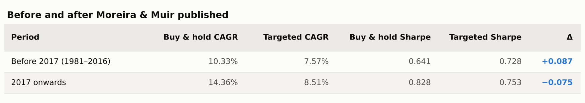
This is the fifth strategy in the series tested against its own publication date, and the fourth where the period after looks worse than the period before. Before 2017 the layer took Sharpe from 0.641 to 0.728, a gain of 0.087. From 2017 it took it from 0.828 down to 0.753.
I do not think this one is arbitrage, and the reason is visible in the same row. The index returned 14.36% a year over the out-of-sample period against 10.33% before it. A rule whose entire function is to hold less than everything was always going to look bad in the strongest nine-year stretch in the sample. The honest statement is that the last nine years have not been a test of this rule — a de-risking overlay cannot distinguish itself in a period that never required de-risking.
Cederburg and co-authors made a stronger version of this argument in 2020, finding that volatility-managed portfolios do not reliably beat their unmanaged counterparts out of sample once you account for the implementation. The result here is consistent with theirs and I would not claim to settle it.
Where it earned its keep
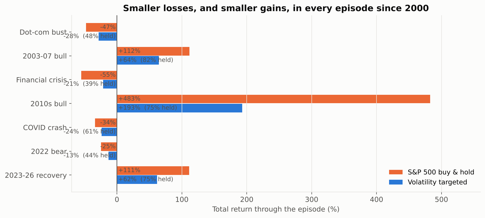
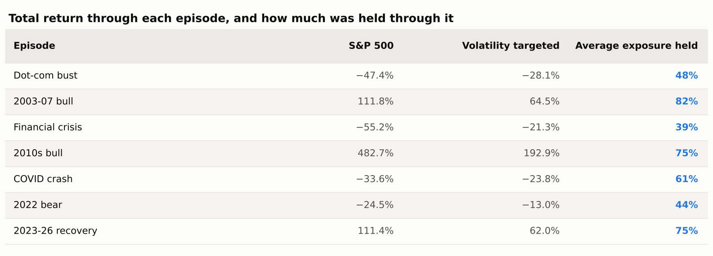
Through the dot-com bust the layer held 48% on average and returned −28.1% against the index's −47.4%. Through the financial crisis it held 39% and returned −21.3% against −55.2%. Through the 2022 bear it held 44% and returned −13.0% against −24.5%.
And it paid for all of that in the bull markets, holding 75% through the 2010s and capturing 193% against the index's 483%.
The exception is COVID, and it is instructive. The layer held 61% through the fastest crash in the sample and returned −23.8% against −33.6% — a much thinner margin than 2008 or 2022. A 60-day volatility estimate cannot see a crash that takes 23 trading days. By the time realised volatility had risen enough to cut the position, the fall was over and the rule spent the recovery underinvested. Every estimator in the lookback grid has this problem; the 20-day version has it slightly less and pays for the privilege everywhere else.
What I'd take from this
It is a risk tool and it should be judged as one. The headline comparison everyone reaches for — did Sharpe go up — understates it and overstates it at the same time. Sharpe moved by 0.052, which is nearly nothing. The worst drawdown moved by 25.9%, which is the difference between an investor holding on and an investor capitulating in March 2009. If the reason you want this is that you cannot sit through a 55% loss, the layer addresses exactly that, and the Sharpe is beside the point.
The timing is real and the magnitude is small. Both controls say the same thing from opposite directions, and neither is ambiguous. But a signal that forecasts risk and not return cannot produce a large improvement in a ratio of return to risk, and it didn't. Treat a backtest claiming otherwise with suspicion.
Cap it at 1.0 unless you have checked what the leverage buys. The de-risking is free in the sense that it needs no borrowing and costs nine basis points a year in turnover. The leverage is where the margin bill, the path dependence and the RSI(2) failure mode all live, and on plain buy & hold it added nothing at any cap I tested.
It composes. This is the part I did not expect. The layer sits on top of five books built independently, over different universes and rebalance frequencies, without modifying any of them, and improves all five. Almost nothing in quantitative investing stacks that cleanly. The reason it does is that it answers a question none of the others were asking.
Caveats worth stating plainly
One market, one asset class. Everything here is US equities through a mutual-fund proxy, with a bond fund and a T-bill index alongside. Volatility targeting is usually argued for hardest on futures and on momentum strategies, where the volatility swings are wider. I have not tested it there.
Uninvested capital earns nothing. The engine pays no interest on the part of the portfolio the layer moves out of the market, which is the harshest assumption available and costs the targeted version real money across 45 years of non-zero rates. Crediting T-bills would raise every targeted return here and would not change the Sharpe comparison, since the control that holds a constant 72% is affected identically.
The volatility estimate is the simplest one that works. A rolling standard deviation and an EWMA, nothing more. A GARCH model, an implied-volatility input, or a downside-only measure would each change the timing somewhat; the published literature does not suggest they change it enormously, but I have not run them.
The shuffled control preserves the distribution, not the autocorrelation. Shuffling destroys the clustering in the exposure path as well as its alignment to the market, so some of the gap between timed and shuffled is the cost of a jumpier position rather than the value of correct timing. The constant-exposure control brackets this from the other side, and between the two the conclusion holds, but the shuffled number alone slightly overstates the case.
And as always: one window, one market, and a rule I chose knowing how the last 45 years turned out.
The code
Same open-source harness as the rest of the series. This article needed the engine to hold more than it owns, so it now takes a leverage cap and charges a margin spread on borrowed capital, alongside the short book added in article #5. The layer is a strategy that wraps another strategy, which means it applies to every rule in the repo without touching any of them.
pip install -r requirements.txt
python strategies/volatility-targeting/run.py
python strategies/volatility-targeting/make_charts.pyCode: strategy-lab/strategies/volatility-targeting — this strategy, with every output file committed. Engine: AlgoStrategyLab/strategy-lab — the shared harness, MIT licensed.
Next up: risk parity — splitting money between assets by how much each one moves, rather than by a rule about which one to own.
References. Moreira, A. & Muir, T. (2017), "Volatility-Managed Portfolios", Journal of Finance 72(4) — the paper this tests. Harvey, C. et al. (2018), "The Impact of Volatility Targeting", Journal of Portfolio Management 45(1). Cederburg, S. et al. (2020), "On the Performance of Volatility-Managed Portfolios", Journal of Financial Economics 138(1) — the main out-of-sample challenge to Moreira and Muir. Barroso, P. & Santa-Clara, P. (2015), "Momentum Has Its Moments". Data: Yahoo Finance adjusted closes, retrieved 25 November 2026.
This is research and education, not investment advice. Backtests benefit from hindsight in instrument choice and start date, and past performance does not predict future results.